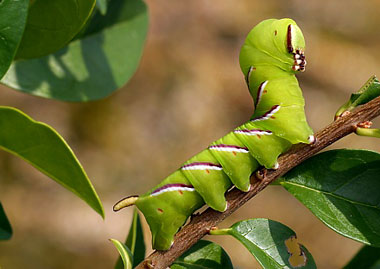
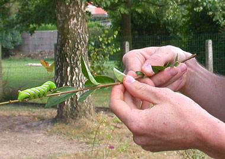

Ligusterpijlstaart
donderdag 28 augustus 2003 | Zomaar
Vorige week kreeg ik een mailtje van dorpsgenoot Gunther Groenez met de blijde boodschap dat hij vier rupsen van de Ligusterpijlstaart (Sphinx ligustri) had geadopteerd. De duimdikke groene wezens waren eizona naar het hiernamaals verwezen, had hij ze niet van de gifdood door een verontruste buurvrouw gered die haar nette haag met de dag zag slinken…
De Ligusterpijlstaart heeft de wetenschappelijke geslachtsnaam Sphinx, omdat hij zijn vleugels op dezelfde wijze over het lichaam vouwt als dit gevleugelde monster uit de Griekse mythologie. De grote rups, die in juli en augustus te vinden is, wordt vaker gezien dan de nachtvlinder.
Intussen hebben de dieren zich in hun terrarium 15 cm onder de grond teruggetrokken (veel dieper dan andere rupsen!) om zich te verpoppen. Dat proces duurt… tot twee jaar. Geduld is een schone zaak: het leverde Gunther in ieder geval nu al mooie beelden op!


kjell op 19 september 2005
hallo wij hebben ook een liguster rups gevonden zou je er wat meer info kunnen over geven. zie je die veel of is dat nie veel voorkomend. en wat moeten we ermee doen als we ze niet moeten hebben